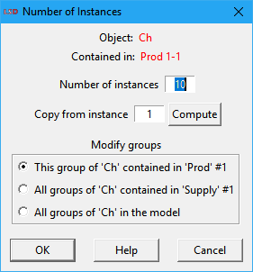
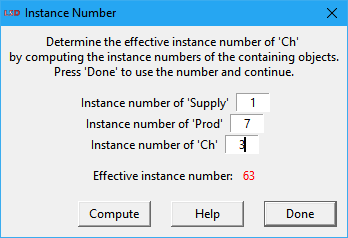
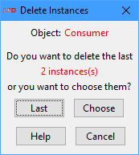
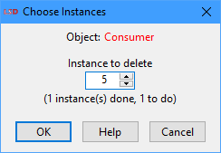

LSD Object Number Editor
|
|
2. Modifying the number of Object instances a. Computing global instance numbers |

The LSD Object Number Editor shows the number of instances of any Object type in the model structure and allows changing them. Each Object type in a LSD model can have one (the default) or more instances or copies.
Editor window organization
The LSD Object Number Editor is organized in lines. Each line corresponds to a set of Object instances of the same type descending from the same parent instance (a brotherhood) and contains:
· Change: a button for setting the number of instances for the Object type. Click it to change the number of instances of the associated Object type. It is possible either to change the number of instances of this group (brotherhood) only, or of all the groups of the same type (see details below). For instance, in the example above the fourth line says that there are 10 instances of Object AgCh in the first instance of Object Agent, in the first instance of Object Group, in the first instance of Object Demand.
· Name of the Object type: the . sign(s) before the name, if any, indicate the deepness of the Object type in the model structure hierarchy from the topmost Object (the one without the . before). The names (in bold) can be clicked as a shortcut for the Initial Values Editor window for all Object instances of the same type. For instance, the third and fourth line in the example above show that the instances of Object type Agent are placed at the third level in their branch of the hierarchy (at the first level is Demand and at the second is Group).
· Parent(s) instance index(es): each Object type below the topmost level presents the exact instance index of the parent Object(s) the group is descending from. Each instance in a group (brotherhood) of Objects of the same type descending from a single parent is indexed. In the example above, the fourth line is referred to the instances of the Object type Agent, contained in the first instance of Object Group (the parent) and in the first instance of Object Demand (the grandparent).
The lowest part of the editor window contains, besides the Help button and the Done button to return to the main LSD Browser (shortcut: Esc), two buttons ( - and + ) to set the maximum hierarchical level (depth) of the model to be shown. When the editor is open, by default it shows the entire model structure (full depth). Using the + / - buttons the user can select the appropriate amount of information to be displayed.
Modifying the number of Object instances
The user can click on the buttons showing the number of instances of each Object type to modify this value. Depending on the position of the group in the model structure hierarchy, it is possible to modify specific sets of groups within single branches of the hierarchy tree. For instance, clicking on the second button on the Supply branch (beside the first Object Ch) with the number 10 inside (indicating the number of instances of Object Ch), one obtains the following window:

The presented dialog box, shown above, offers options to modify the number of instances of the selected group of Object Ch instances. The box indicates that the selected Object group is contained in the instance of Object Prod indexed as 1-1, meaning it is the son of the first instance of Object Prod (among 10), contained in the first (and only) instance of Object Supply.
The available options in the dialog box are:
· Number of instances: this entry contains the desired number of instances of the selected Object type for the group concerned according to the options below. By default, the entry has the existing number of instances (10 in the example above).
· Copy from instance: a global instance number indicating the (existing) Object instance to use as the blueprint for newly created instances, if required. The blueprint is required to supply the initialization values for the contained Parameters and lagged Variables, and the number of descending Objects. The default (1) is to use the very first instance of the Object in the model. The global instance number may refer to any copy of the Object in the model.
· Compute: allows determining the global number of a specific instance of the Object, to be used as the blueprint, from the ancestors indexes. See the details below.
· Modify groups: list of the options of which groups of the current Object type will be modified. By default, only the group which the user has clicked (This group) is selected to be modified. The user can also select to modify all groups under the same parent, grandparent and so on. For instance, selecting in the example above the option All groups … in the model would change all the groups of instances of Object Ch existing in the model. The intermediate options offer different levels of covered groups for change.
If the new number of Object instances is lower than the existing one, some copies of the Object are going to be removed. If the user chose the first modification option, affecting only the current group, then the user may select to either remove the last instances or to individually pick which copies to remove (check the details here). Instead, if the user choses a modification option which affects an entire branch of the model structure tree, then the last instances in each affected group are always the ones removed.
Important: When new Object instances are inserted in a model they may include initial values relevant to start the simulation (lagged Variables or Parameters). For newly inserted Objects these values are copied by default as defined in the very initial instance of the Object. But LSD does not allow a simulation to be started unless these values are explicitly set by the user. Therefore, after a session where new Object instances are added to the model it is necessary to edit the Object to set (or confirm) their initialization values (see Initial Values in menu Data). The user can access to the Initial Values Editor for initializing values by just clicking on their label in the Object Number Editor.
Computing global instance numbers
This dialog box, accessed by the Compute button, offers a convenient method to compute the required global instance number for the desired Object, based on its indexes across the hierarchy tree. In some cases it is necessary to specify an exact instance, or copy, of an Object. LSD requires the global (sequential) number of the instance among all the ones present in the model, but in general it is easier to indicate instances in respect of the position in the hierarchy of Objects.

The user must provide the instance number of each Object in the tree branch leading to the Object being evaluated, by filling the respective fields for the instance of this Object, the instance of its parent, of its grandparent and so on, until the topmost Object in the hierarchy. When the fields are properly set, the user may click on Compute to evaluate the global instance number.
For example, the window above indicates that the 3th instance of Object Ch contained in the 7th copy of Object Prod contained in the 1st Supply (and only). The computed global (sequential) instance number is 63.
After the proper number is computed, clicking on Done transfers this result to the calling window. The computed number will be pasted in the cell where the global instance number is required.
Choosing instances to remove
If the user reduces the number of Object instances in a single group, there are two options on how to proceed: remove all the excess instances starting from the last, or choose the ones to delete individually. The user option is confirmed in a dialog box like the one below.

In the example above, the user must select two instances of Object Ch to delete. Clicking on the Last button removes the necessary copies starting from the last one in the affected group. Instead, pressing the Choose button allows the individual selection of the instances to remove. In this case, a new dialog box (below) queries the user to enter the number/index (in the group) of each of the Object instances to remove, one at a time.

In Choose Instances dialog, for each element to remove the user types its number and press Enter (or click on OK). In the example, the second element to remove is the fifth. While there are instances to delete, the process repeats. Please note that it is only possible to provide element numbers in increasing order. In the example, after having indicated 3 for the first instance to delete, the user can only choose numbers equal or larger than 4.
Quick setting the number of Object instances
There are two options to quickly set the number of instances for any Object type, with no need to open the full Object Number Editor. To set the number of instances of any Object currently listed in the LSD Browser descending Objects list box, right click on the desired Object and select the option Number from the context menu. Or, in the LSD Model Structure window, right click on the target Object and again chose Number in the context menu.
After selecting this option a simplified version of the Number of Instances dialog box (example above) opens. The first options are the same as the full version but there is no control over which groups the changes will apply. In this case, if there is more than one group of this Object type in the model, all the groups will be modified so all of them will have the same number of instances, as specified by the command. If the new number of instances is larger than the previous one(s), new instances will be appended to the existing group(s) of instances. If the new setting is lower than the previous one, the last instances will be eliminated.
To edit the number of instances, differentiating for each groups of descendants, or to choose the particular instances to delete, it is necessary to use the Object Number Editor, using the menu option Data>Number of Objects in the LSD Browser or clicking on the green plus icon in the toolbar.